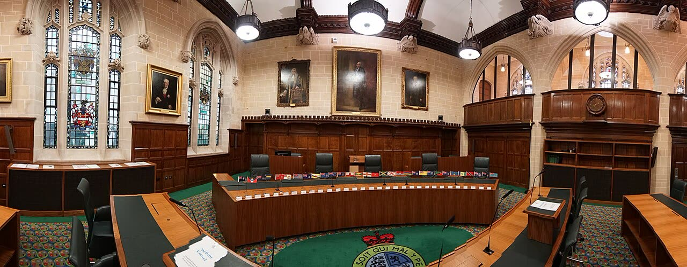

Trinidad, il Privy Council: incostituzionale punire il sesso gay tra adulti
Il coro regge
Giusto nel merito: lo Stato non entra nella vita privata degli adulti. Ma non era solo un'eredità coloniale: quella norma il Parlamento di Trinidad la riscrisse nel 1986.
Redazione Contrappunto · aggiornato il 12.11.2026


Il 10 novembre 2026 il Judicial Committee del Privy Council, a Londra, ha stabilito all'unanimità che le sezioni 13 e 16 del Sexual Offences Act del 1986 di Trinidad e Tobago, che puniscono il «buggery» e gli atti di «grave indecenza», non possono essere usate contro i rapporti privati e consenzienti tra adulti dello stesso sesso. La causa l'ha portata Jason Jones, 62 anni, nato a Trinidad e oggi cittadino britannico oltre che trinidadiano. Trinidad e Tobago è uno Stato caraibico, ex colonia britannica, che per l'ultimo grado di giudizio si affida ancora a un tribunale di Londra. La sentenza non è l'ultima parola: il tribunale ha chiesto alle parti altre memorie scritte prima dell'ordine finale.
Vedi di più: 4 parole spiegate, cosa si racconta
Cosa si raccontaLe testate lette riportano lo stesso esito: sentenza unanime, vittoria di Jones dopo oltre dieci anni di cause (Euronews, Guardian di Trinidad, TTT, Jamaica Observer, Jerusalem Post, BritBrief). Jones dice che la decisione non risolve la questione dei diritti delle persone LGBT sotto le altre leggi dell'era coloniale nel Commonwealth (Guardian di Trinidad) e prevede un effetto a catena nella regione (BritBrief). Il suo studio legale, Freedom Law Chambers, parla di vittoria per i diritti dei gay, la pari dignità e il rispetto della vita privata e familiare, e l'Alto commissario ONU per i diritti umani, Volker Türk, la saluta come un passo importante (Euronews). Ria Mohammed, avvocata dei diritti umani citata dalla CNN nel Jerusalem Post, vede un'ironia: un ex colonia che chiede a Londra di cancellare una legge di quell'epoca. Dopo la sentenza non abbiamo letto una reazione del governo di Trinidad né dei gruppi religiosi che difendevano la legge. [Euronews] [Trinidad Guardian] [TTT News] [Jamaica Observer] [The Jerusalem Post] [BritBrief] [WIC News]
- Privy Council
- Il Judicial Committee del Privy Council è un organo con sede a Londra che fa da corte d'ultima istanza per vari territori e Stati del Commonwealth: 32 territori, di cui 11 indipendenti, secondo BritBrief. Trinidad e Tobago, repubblica indipendente, lo riconosce ancora come ultimo grado di giudizio; il suo governo ha già cercato di sostituirlo con la Caribbean Court of Justice, la corte dei Caraibi (Jerusalem Post). Le sue sentenze sono l'ultima parola; qui manca ancora l'ordine finale su come modificare le norme.
- «Buggery» e «grave indecenza»
- Il «buggery» (sezione 13) è il rapporto anale; la «serious indecency» (sezione 16) vieta altri atti sessuali diversi dal rapporto, con un'eccezione per un uomo e una donna maggiori di 16 anni, consenzienti e in privato (jcpc.uk, BritBrief). Le leggi colpiscono quindi gli atti, ma di fatto i rapporti tra persone dello stesso sesso.
- Clausola di salvaguardia
- Norma della Costituzione di Trinidad e Tobago (articolo 6) che protegge da un ricorso basato sui diritti fondamentali le leggi già in vigore quando la Costituzione entrò in vigore, nel 1976, e quelle che le riscrivono con modifiche (Jamaica Observer, Gleaner). Era l'argomento dello Stato per tenere in vita la legge.
- Procuratore generale
- Attorney General: il rappresentante legale dello Stato in giudizio. Qui ha difeso le norme, insieme al Consiglio delle chiese evangeliche (jcpc.uk) e, come parte interessata, alla Sanatan Dharma Maha Sabha, organizzazione indù (WIC News).
- Il 10 novembre il Privy Council di Londra ha stabilito all'unanimità che le sezioni 13 e 16 del Sexual Offences Act 1986 di Trinidad e Tobago violano la Costituzione nella parte che colpisce adulti consenzienti in privato (jcpc.uk, TTT, Guardian di Trinidad, Euronews).
- Per il tribunale quelle norme sono diritto nuovo del 1986, non vecchie leggi protette dalla Costituzione, come sosteneva lo Stato (TTT, Jamaica Observer).
- L'ordine finale non c'è ancora: il tribunale ha chiesto altre memorie scritte e ha detto che il suo parere provvisorio è di confermare l'ordine dell'Alta Corte del 2018 (Jamaica Observer, TTT).
Le testate lette concordano sul risultato: il 10 novembre il Privy Council ha dichiarato incostituzionali, nella parte che colpisce adulti consenzienti, le leggi di Trinidad e Tobago contro il sesso gay (Euronews, Guardian di Trinidad, TTT, Jamaica Observer, Jerusalem Post). Cambia la cornice: Jones e il Jerusalem Post parlano di eredità coloniale; per la TTT il tribunale ha trattato la norma come legge del 1986, non come residuo britannico. Nessuna fonte riporta una reazione del governo dopo la sentenza. Il nostro punto: sentenza giusta, perché lo Stato non decide la vita privata degli adulti. Ma «legge coloniale» è mezza storia: nel 1986 il Parlamento di Trinidad la riscrisse, e lo Stato l'ha difesa fino a Londra. [2] [3] [4] [5] [6]
La verifica punto per punto5 passaggi, 8 fonti
Qui sotto ogni cosa scritta sopra, una per una, con le fonti. Confermato: lo dice un documento originale o più fonti lette. Plausibile: lo riportano fonti serie, ma non abbiamo letto l'originale. Discordante: le fonti danno numeri diversi, e diciamo quali. Ipotesi e Opinione sono il nostro ragionamento, separato dai fatti.
La sentenza
Il 10 novembre 2026 cinque giudici del Judicial Committee del Privy Council hanno accolto all'unanimità l'appello di Jason Jones e respinto l'appello incidentale del procuratore generale: le sezioni 13 e 16 del Sexual Offences Act 1986 non sono protette dalla clausola di salvaguardia e non sono ragionevolmente giustificabili in una società che rispetta i diritti individuali. Per il tribunale sono diritto nuovo e non la semplice riscrittura delle leggi del 1925, come aveva ritenuto la Corte d'appello. Lord Sales, che ha scritto la sentenza con Lord Burrows, ha detto che «Laws which seek to criminalize such activities cannot be justified», riferendosi alla vita privata tra adulti consenzienti.
Il percorso e cosa manca
L'Alta Corte di Trinidad e Tobago aveva dato ragione a Jones nel 2018; nel marzo 2025 la Corte d'appello ha ribaltato in parte la decisione, sostenendo che le norme fossero protette dalla Costituzione (Guardian di Trinidad, Jamaica Observer). Lo Stato difendeva la legge con il Consiglio delle chiese evangeliche (jcpc.uk) e, come parte interessata, con la Sanatan Dharma Maha Sabha (WIC News). Il Privy Council ha chiesto alle parti altre memorie scritte prima dell'ordine finale: il suo parere provvisorio è di confermare l'ordine dell'Alta Corte (Jamaica Observer, TTT). Le fonti non concordano sull'anno d'inizio della causa: 2015 (Guardian di Trinidad), 2016 (BritBrief), 2017 (Jerusalem Post).
Perché decide Londra, e le reazioni
Trinidad e Tobago è una repubblica indipendente e membro del Commonwealth, ma riconosce ancora il Privy Council come ultimo grado di giudizio; il suo governo ha già spinto per sostituirlo con la Caribbean Court of Justice (Jerusalem Post). Jones ha detto che la sentenza chiude il messaggio che le persone LGBT fossero criminali nel loro Paese, ma non risolve i diritti di chi vive sotto altre leggi dell'era coloniale (Guardian di Trinidad); l'Alto commissario ONU Volker Türk l'ha definita una tappa importante (Euronews). Per l'avvocata Ria Mohammed è «the ultimate irony» che una ex colonia si affidi al tribunale dell'ex dominatore (Jerusalem Post, da CNN).
Quanto prevedeva la legge
Secondo la sentenza, il buggery era punito con 5 anni di carcere nella legge del 1925 (§ 11) e con 10 anni, tra adulti, nel Sexual Offences Act 1986 (§ 14); il Children Act 2012 ha portato il massimo a 25 anni in ogni caso (§ 15). Nel 2025 la Corte d'appello ha tolto i 25 anni e rimesso 5 anni per il buggery (§ 22(v)). Euronews, WIC News e il Jerusalem Post (da CNN) riportano quindi la pena che valeva fino a questa sentenza: 5 anni. BritBrief dà 25 anni, che è il testo del 2012 prima dell'intervento della Corte d'appello. I 2 anni che Euronews e WIC attribuiscono alla «serious indecency» non li abbiamo trovati nei paragrafi letti: nella legge del 1925 erano la pena della «gross indecency» (§ 11).
Il nostro punto
La sentenza è giusta: lo Stato non decide la vita privata degli adulti, e nessuno dovrebbe rischiare il carcere per quello che fa con un altro adulto consenziente. Ma chiamarla «legge coloniale» è mezza storia: nel 1986 il Parlamento di Trinidad la riscrisse e lo Stato l'ha difesa in tribunale fino a Londra. Che la sentenza arrivi da un tribunale straniero, e non da una legge votata a Port of Spain, è un fatto che a Trinidad si dovrebbe dire ad alta voce.
Fonti8, tutte con il link
- [2026] UKPC 38, Attorney General of Trinidad and Tobago v Jason Jones, sentenza del 10 novembre 2026 (§§ 11, 14, 15, 22) (Judicial Committee of the Privy Council) · consultata il 12.11.2026
- Trinidad and Tobago court ends gay sex ban (11 novembre 2026) (Euronews) · consultata il 12.11.2026
- Jones: Fight for equality not over (10 novembre 2026) (Trinidad Guardian) · consultata il 12.11.2026
- Privy Council Rules Against Criminalisation Of Consensual Same-Sex Relations (10 novembre 2026) (TTT News) · consultata il 12.11.2026
- Privy Council rules in favour of gay man who challenged T&T buggery laws (11 novembre 2026, agenzia CMC) (Jamaica Observer) · consultata il 12.11.2026
- Trinidad and Tobago's gay-sex ban overturned after legal battle (11 novembre 2026) (The Jerusalem Post) · consultata il 12.11.2026
- Privy Council rules Trinidad's anti-LGBTQ+ law unconstitutional (11 novembre 2026) (BritBrief) · consultata il 12.11.2026
- Trinidad: Privy Council rules against criminalisation of consensual same-sex relations (11 novembre 2026) (WIC News) · consultata il 12.11.2026